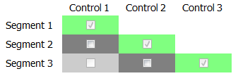
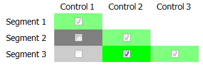
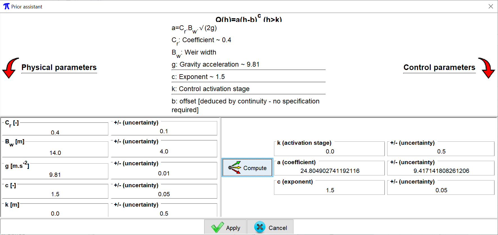
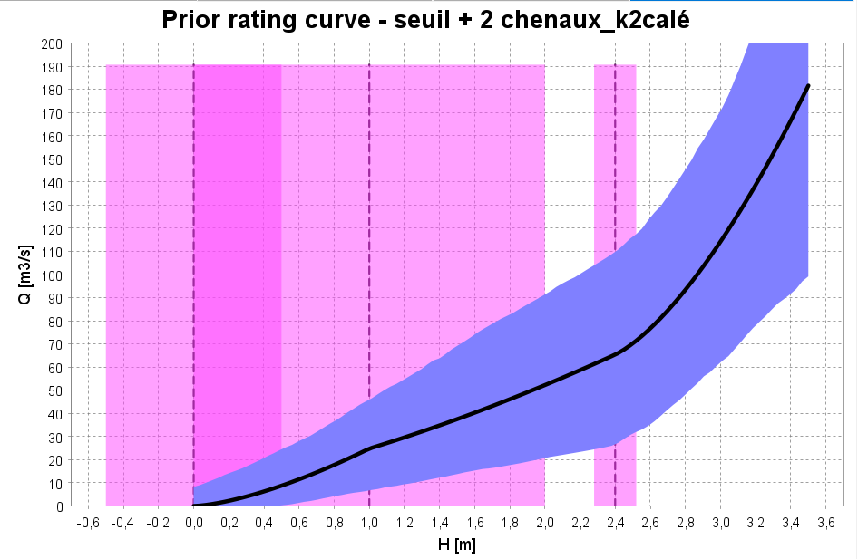

The hydraulic configuration is the definition of all the controls that govern the physical stage-discharge relationship, and their succession/combination when the water level rises. It plays a crucial role in an analysis with BaRatinAGE because it induces the equation of the rating curve.
Specifying a hydraulic configuration must result from a hydraulic analysis of how the hydrometric station works. For a natural river, the following situation is quite frequent: at low flows, the stage-discharge relationship is controlled by the geometry of a critical section at one or more weirs/sills (natural or artificial). When the stage increases, the weir gets drowned and the stage-discharge relationship is then controlled by the average geometry and roughness of the low-flow channel. For an even larger stage, part of the stream may flow in a floodway or over the bars of the main channel: the stage-discharge relationship is then controlled by two channels: the low-flow channel and the floodway.
BaRatinAGE formalises this hydraulic analysis for a wide variety of situations, which covers the vast majority of practical cases encountered in natural rivers (while making some acceptable approximations). The recommended practice in BaRatinAGE is to break down the real critical sections into a combination of idealised weirs or orifices, and the real controlling channels in a combination of wide, rectangular channels. Each introduced control must correspond to physical elements that can be clearly identified in the field. For details on the hydraulic analysis of a hydrometric station, you may refer to this document.
You can create a new hydraulic configuration in several ways:
You will be asked to name this new hydraulic configuration, and you can enter a description. In the "Hydraulic configuration" tab, you need to specify the properties of this configuration. If you wish, you can enter a free text in the "Description" field. You must also specify the number of controls that make up this configuration. As an illustration, we will work with the common example mentioned above, and thus select 3 controls (weir, low-flow channel, floodway).
The panels of the "Hydraulic configuration" tab then update. In particular, the following matrix, called "matrix of controls" or "Bonnifait matrix" (in honor of his venerable inventor) appears:

This matrix determines how controls succeed or add to each other. Each row of the matrix corresponds to a stage segment, and each column to a control. The above matrix is therefore interpreted as follows:
This matrix is not adequate for the example here. Indeed, for the third segment, the flow is both in the low-flow channel and in the floodway. The control by the floodway should therefore be added to the control by the low-flow channel (instead of replacing it). We can specify this combination of controls by selecting, for the third segment, both control 2 ("low-flow channel") and control 3 ("floodway") as shown below:

Note 1: Remember to click the "Apply" button to save the edits that you have made.
Note 2: There are some restrictions on how to fill the matrix of controls (e.g., a control that has been disabled cannot be re-enabled in a higher segment, etc.), which is why all the matrix cells are not clickable.
Note 3: The information contained in the matrix of controls is sufficient to write the equation of the rating curve. For more details on this equation, you can refer to this document.
The hydraulic analysis not only identifies the different types of controls that govern the stage-discharge relationship, and their succession/combination: it also allows a first quantitative (though potentially very uncertain) estimation of the rating curve.
In BaRatinAGE, each control is associated with a stage (H) - discharge (Q) relationship in the form of the basic equation:
Q = a(H-b)c for H > k (and Q = 0 if H ≤ b)
Defining prior parameters is done in the lower part of the descriptive panel, where each control is associated with a tab. Getting back to the example used so far, we can define the characteristics of the first control by entering a description of the control and by selecting its type in the pulldown menu (here "rectangular weir"). This selection provides access to the prior assistant that will help you relate the physical properties of the control and the uncertain values of the parameters k, a and c. By clicking the button, the assistant opens in a new window like the one shown below. In the upper part of the window, the relationship between the physical properties of the control and the parameters k, a and c are recalled (obviously these relationships depend on the previously selected control type). You can enter the physical properties in the fields located in the left side of the window (some fields are prefilled because they only depend on the type of control, but you can always edit them if you wish). Note that everywhere throughout BaRatinAGE, uncertainties are expressed as 95% expanded uncertainties, i.e. as the half-width of a 95% confidence interval. For a Gaussian distribution, this corresponds to 1.96 times the standard deviation. Once all fields are defined, a click on the "Compute" button will translate the physical properties of the control in terms of parameters k, a and c, and propagate the uncertainties. Finally, clicking the "apply" button will close the assistant and complete the definition of prior parameters for the first control. You can continue with the second control in a similar manner until all controls are completed.

Once the priors are defined for all the controls, it is possible to plot a first rating curve (with uncertainties), called the prior rating curve because it is achieved without using any gauging. The prior rating curve is computed using a Monte Carlo approach: parameters k, a and c of all the controls are sampled randomly using the uncertainties defined in the previous step. By sampling a large number of parameters, we obtain a large number of possible curves which are used to calculate an uncertainty interval at a given confidence level (95% in BaRatinAGE).
In practice, you must specify the following information at the top of the graphic panel:

Here are some important recommendations for defining priors:
Finally, note that by clicking on the "More plots" button, it is possible to plot the rating curve "spaghettis": in this chart, each curve corresponds to a random sampling of parameters k, a and c of each control, as explained above. Displaying all the Nsim random samples provides a different representation of the uncertainty than the standard interval (Note. only 100 spaghettis are actually plotted for readability and efficiency reasons).